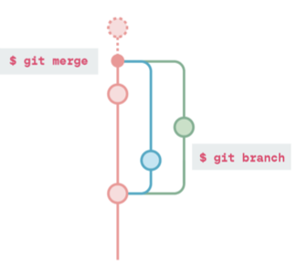

Traduccion regulinchi, hay varios anglisismos y partes que no se bien como traducirlo, aparte de explicado mas con mis palabras.
Tener en cuenta
Configura tu información de usuario que vas a utilizar
Actualiza el nombre de usuario que vas a utilizar:
$ git config --global user.name "[name]"
Actualiza el email que quieres utilizar:
$ git config --global user.email "[direccion email]"
Habilita una ayuda para la linea de comandos con colores:
$ git config --global color.ui auto
Puedes crear un nuevo repositorio en local o hacer una copia de alguno online existente para trabajar con el.
$ git init
Habilita en la carpeta que vas a trabajar un repositorio git. Importante estar posicionado en la carpeta del proyecto con el que vamos a trabajar.
$ git clone "[url]"
Clona repositorios descargados desde internet de paginas como Github, GitLab o Bitbucket.
Git realizar cambios de manera facil en los archivos todo el tiempo. Una vez tu tienes inicializado o clonado un repositorio, todos tus cambios estan en marcha y Git puede ver los cambios que has realizado. Sin embargo para ver en orden los cmabios que has realizado debes añadirlos y confirmarlos?
$ git add [file]
Añade cambios de un solo archivo
$ git add .
Añade todos los arhivos cambiados
$ git commit -m "[comentario descriptivo]"
Al realizar el guardado de un cambio debemos de guardar conjuntamente un comentario que defina lo que hemos hecho
Git ofrece mucha visibilidad en el estado de tu trabajo actual, tu hisotrial de cambios y una gran varidad de detalles sobre estos cambios.
$ git status
Muestra la nformacion sobre que "estado de Git" estas, incluyendo la rama en la que estas y si estas al dia con el repositorio remoto
$ git log
Muestra el historial de version sobre la rama actual, incluyendo todos los mensajes descriptivos, autor, tiempo en el que se hizo el commit
$ git log --online
Muestra una version corta del historial de la actual rama (branch) solo mostrando la primera linea del mensaje descriptivo y commit hash (no se como vainas traducir esto)
$ git diff
Muestra todos los cambios entre los archivos que no tienen "staged yet" (no se bien como traducirlo, "estado cargado?")
$ git show [commit]
Muestra la metadata y el contenido cambiado sobre un commit especifico. El commit es identificado por el hash, el cual tiene un numero id unico generado cuando el commit es hecho
Hay una cierta cantidad de archivos que puede que no quieras rastrear (resgistrar), como imagenes o videos o archivos que contengan informacion sensible como credenciales. Tu puedes hacer esto creando un archico especial llamado ".gitignore". Dentro de este archivo puedes listar de forma individual archivos para no usar o excluir tipos enteros de archivos, por ejemplo ".jpg" o "mp4"
Hay dos formas para realizar cambios en tu historial de confirmaciones (commit)
$ git revert [commit]
Realiza un nuevo commit que deshace todos los cambios del commit llamado, normalmente se usa en el commit mas reciente
$ git reset [commit]
Deshace todos los commit despues del [commit] y manttiene los cambios en local. Pese a ser una forma poderosa de deshacer el commit, tiene un alto riesgo de crear conflictors si has hecho muchos cambios desde ese commit
$ git reset --hard
Descarta todos los cambios locales en el proyecto que estas trabajando y resetea todos los archivos hasta el punto de estado en el que ellos estaban en el ultimo [commit]
Los repositorios locales pueden tener conecciones a uno o mas repositorios remoto para enviar o extraer cambios de ellos. Si tu clonas un repositorio, la URL remota que clonas se establecera como el origen
$ git remote add [remote name] [url]
Especifica el repositorio remoto para tu repositorio local. La url apunta a el repositorio en un server remoto o en un servicio como GitHub, GitLab o Bitbucket
Sincronizar tu repositorio con el repositorio remoto
$ git push [remote name] [branch]
Carga todos los commits locales de tu historial local a su rama remota? (Aqui necesito la explicacion de Marce)
$ git fetch
Descarga todo el historial de tu rama remota pero no realiza las confirmaciones automaticas en ella
$ git merge
Combina el historial de busqueda de tu rama remota con tu rama local actual
$ git pull
Actualiza tu rama de trabajo local con todos los nuevos commits realizado de su correspondiente rama remota. Viene siendo una combinacion de git fetch y git merge
La ramificacion permite que realices commits que no afectan a tu otro trabajo hasta que este listo para aplicar esos cambios. Cualquier commit será realizado sobre la rama que estes trabajando y no sobre la principal o rama maestra. Siempre puedes usar "git status" para ver en cual rama estas
$ git branch [branch-name]
Crea una nueva rama. Por ejemplo: git branch caracteristica-A
$ git checkout [branch-name]
Cambia a la rama especificada y actualiza cualquier documento que use esa version

$ git merge [branch-name]
Combina el hisotiral de la rama especificada con la rama atual. Piensa siempre en Git metiendo cosas en el . En este caso, esxtrayendo los cambios de la rama especificada a su rama de salida actual
$ git branch -d [branch-name]
Elimina la rama especificada